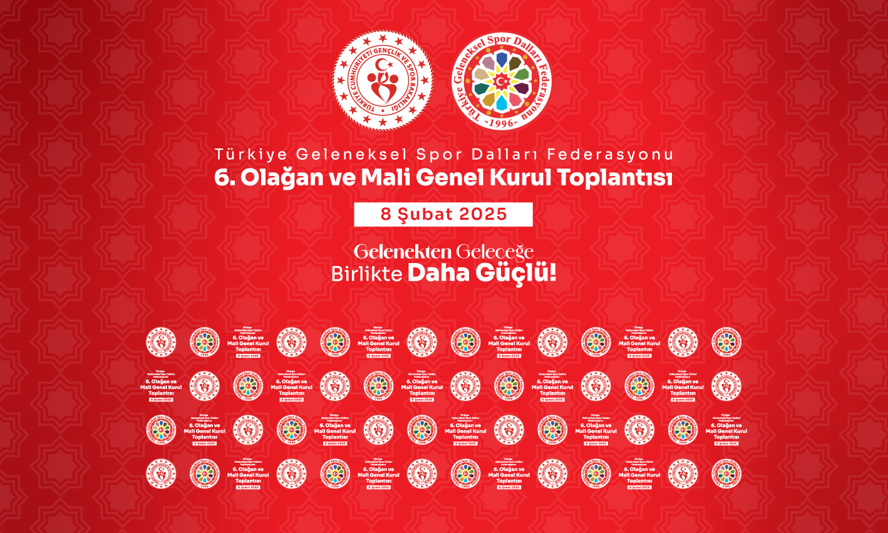
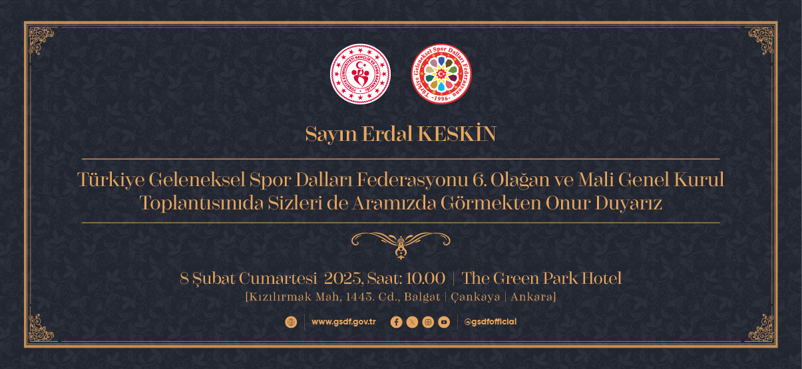
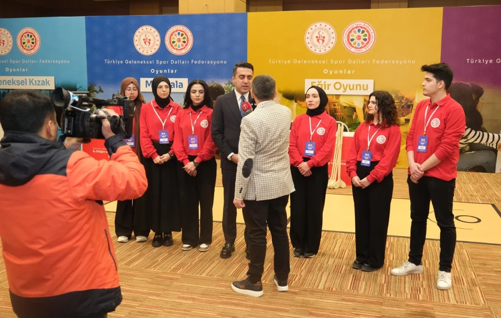
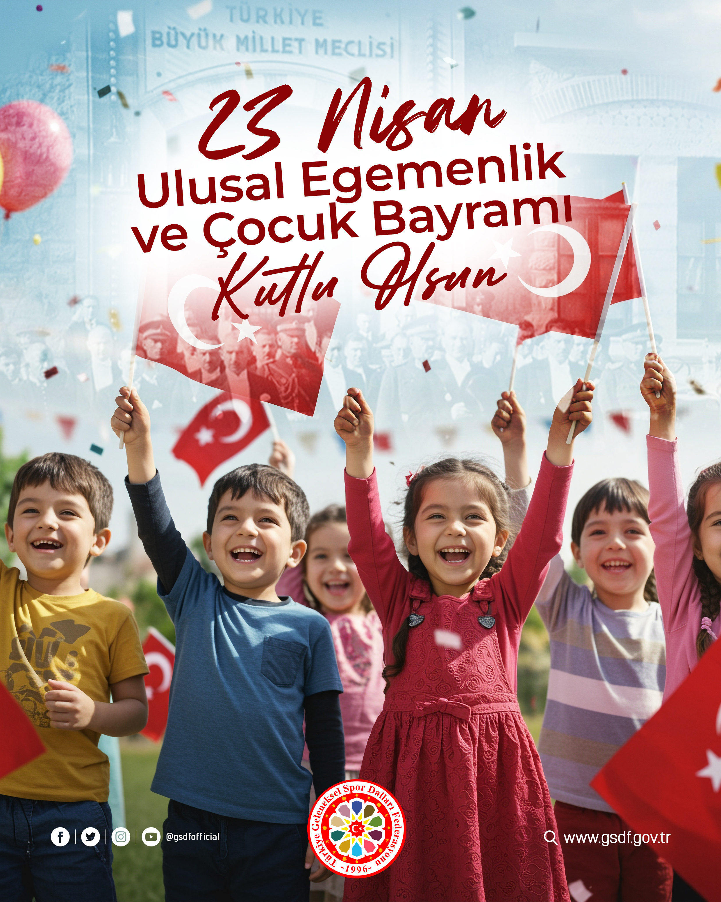

Geleneksel Spor Dalları Federasyonu
Bu proje kapsamında GSDF için sosyal medya, etkinlik ve kurumsal tasarımlar hazırladım. Aşağıda projeye ait örnek çalışmaları bulabilirsiniz.

Genel Kurul Led Ekran Backdrop Tasarımı

Genel Kurul Davetiye Tasarımı

Personel Kimlik Kartı Tasarımı

Oyun Tanıtım Backdrop Tasarımı

23 Nisan Sosyal Medya Post Tasarımı